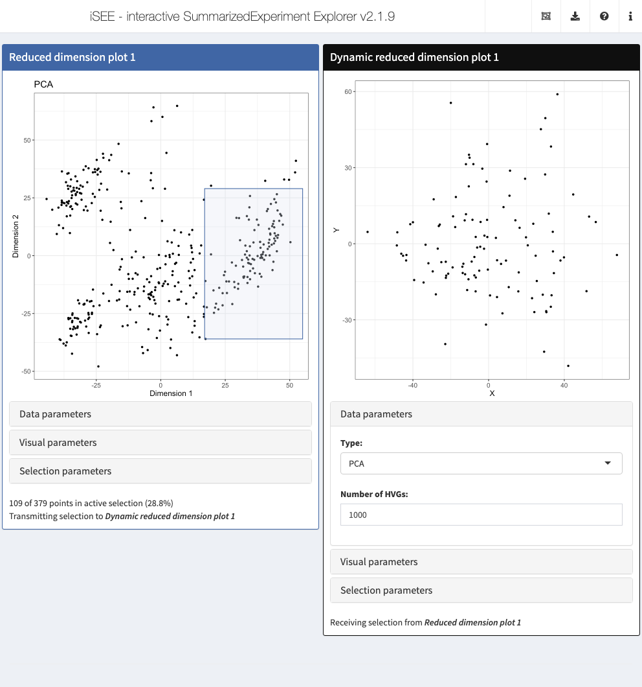

Chapter 5 Dynamic reduced dimensions
5.1 Overview
In this case study, we will create a custom panel class to regenerate sample-level PCA coordinates using only a subset of points transmitted as a multiple column selection from another panel.
We call this a dynamic reduced dimension plot, as it is dynamically recomputing the dimensionality reduction results rather than using pre-computed values in the reducedDims() slot of a SingleCellExperiment object.
This proposed class is the basis of the DynamicReducedDimensionPlot from the iSEEu package.
5.2 Class basics
First, we define the basics of our new Panel class.
As our new class will be showing each sample as a point, we inherit from the ColumnDotPlot virtual class.
This automatically gives us access to all the functionality promised in the contract,
including interface elements and observers to handle multiple selections and respond to aesthetic parameters.
We add a slot specifying the type of dimensionality reduction result and the number of highly variable genes to use. Any new slots should also come with validity methods, as shown below.
library(S4Vectors)
setValidity2("DynRedDimPlot", function(object) {
msg <- character(0)
if (length(n <- object[["NGenes"]])!=1L || n < 1L) {
msg <- c(msg, "'NGenes' must be a positive integer scalar")
}
if (!isSingleString(val <- object[["Type"]]) ||
!val %in% c("PCA", "TSNE", "UMAP"))
{
msg <- c(msg, "'Type' must be one of 'TSNE', 'PCA' or 'UMAP'")
}
if (length(msg)) {
return(msg)
}
TRUE
})We specialize the initialize() method to provide a default for new parameters.
We also implement a constructor for instances of this class.
5.3 Setting up the interface
The most basic requirement is to define some methods that describe our new panel in the iSEE() interface.
This includes defining the full name and desired default color for display purposes:
setMethod(".fullName", "DynRedDimPlot", function(x) "Dynamic reduced dimension plot")
setMethod(".panelColor", "DynRedDimPlot", function(x) "#0F0F0F")We also add interface elements to change the result type and the number of genes.
This is most easily done by specializing the .defineDataInterface method:
library(shiny)
setMethod(".defineDataInterface", "DynRedDimPlot", function(x, se, select_info) {
plot_name <- .getEncodedName(x)
list(
selectInput(paste0(plot_name, "_Type"), label="Type:",
choices=c("PCA", "TSNE", "UMAP"), selected=x[["Type"]]),
numericInput(paste0(plot_name, "_NGenes"), label="Number of HVGs:",
min=1, value=x[["NGenes"]])
)
})We call .getEncodedName() to obtain a unique name for the current instance of our panel, e.g., DynRedDimPlot1.
We then paste0 the name of our panel to the name of any parameter to ensure that the ID is unique to this instance of our panel;
otherwise, multiple DynRedDimPlots would override each other.
One can imagine this as a poor man’s Shiny module.
5.4 Creating the observers
We specialize .createObservers to define some observers to respond to changes in our new interface elements.
Note the use of callNextMethod() to ensure that observers of the parent class are also created;
this automatically ensures that we can respond to changes in parameters provided by ColumnDotPlot.
setMethod(".createObservers", "DynRedDimPlot",
function(x, se, input, session, pObjects, rObjects)
{
callNextMethod()
plot_name <- .getEncodedName(x)
.createProtectedParameterObservers(plot_name,
fields=c("Type", "NGenes"),
input=input, pObjects=pObjects, rObjects=rObjects)
})Both the NGenes and Type parameters are what we consider to be “protected” parameters,
as changing them will alter the nature of the displayed plot.
We use the .createProtectedParameterObservers() utility to set up observers for both parameters,
which will instruct iSEE() to destroy existing brushes and lassos when these parameters are changed.
The idea here is that brushes/lassos made on the previous plot do not make sense when the coordinates are recomputed.
For this particular panel class, an additional helpful feature is to override .multiSelectionInvalidated.
This indicates that any brushes or lassos in our plot should be destroyed when we receive a new column selection.
Doing so is the only sensible course of action as the reduced dimension coordinates for one set of samples have no obvious relationship to the coordinates for another set of samples;
having old brushes or lassos hanging around would be of no benefit at best, and be misleading at worst.
5.5 Making the plot
When working with a ColumnDotPlot subclass, the easiest way to change plotting content to override the .generateDotPlotData method.
This should add a plot.data variable to the envir environment that has columns X and Y and contains one row per column of the original SummarizedExperiment.
It should also return a character vector of R commands describing how that plot.data object was constructed.
The easiest way to do this is to create a character vector of commands and call eval(parse(text=...), envir=envir) to evaluate them within envir.
setMethod(".generateDotPlotData", "DynRedDimPlot", function(x, envir) {
commands <- character(0)
if (!exists("col_selected", envir=envir, inherits=FALSE)) {
commands <- c(commands,
"plot.data <- data.frame(X=numeric(0), Y=numeric(0));")
} else {
commands <- c(commands,
".chosen <- unique(unlist(col_selected));",
"set.seed(100000)", # to avoid problems with randomization.
sprintf(".coords <- scater::calculate%s(se[,.chosen], ntop=%i, ncomponents=2);",
x[["Type"]], x[["NGenes"]]),
"plot.data <- data.frame(.coords, row.names=.chosen);",
"colnames(plot.data) <- c('X', 'Y');"
)
}
commands <- c(commands,
"plot.data <- plot.data[colnames(se),,drop=FALSE];",
"rownames(plot.data) <- colnames(se);")
eval(parse(text=commands), envir=envir)
list(data_cmds=commands, plot_title=sprintf("Dynamic %s plot", x[["Type"]]),
x_lab=paste0(x[["Type"]], "1"), y_lab=paste0(x[["Type"]], "2"))
})We use functions from the scater package to do the actual heavy lifting of calculating the dimensionality reduction results.
The exists() call will check whether any column selection is being transmitted to this panel; if not, it will just return a plot.data variable that contains all NAs such that an empty plot is created.
If col_selected does exist, it will contain a list of character vectors specifying the active and saved multiple selections that are being transmitted.
For this particular example, we do not care about the distinction between active/saved selections so we just take the union of all of them.
Of course, this is not quite the most efficient way to implement a plotting panel that involves recomputation.
A better approach would be to cache the x/y coordinates and reuse them if only aesthetic parameters have changed,
thus avoiding an unnecessary delay from recomputation.
Doing so requires overriding .renderOutput() to take advantage of the cached contents of the plot,
so we will omit that here for simplicity.
5.6 In action
Let’s put our new panel to the test.
We’ll use the sce object from Chapter 4, which includes some precomputed dimensionality reduction results.
The plan is to create a (fixed) reduced dimension plot that will transmit a multiple selection to our dynamic reduced dimension plot.
Brushing at any location in the former will then trigger dynamic recompution of results in the latter.
rdp <- ReducedDimensionPlot(PanelId=1L, PanelWidth=6L,
BrushData = list(
xmin = 17, xmax = 55, ymin = -36, ymax = 29,
coords_css = list(xmin = 300L, xmax = 450L, ymin = 170L, ymax = 404L),
coords_img = list( xmin = 375L, xmax = 562, ymin = 212, ymax = 505L),
img_css_ratio = list(x = 1, y = 1),
mapping = list(x = "X", y = "Y"),
domain = list(left = -49, right = 57, bottom = -53, top = 70),
range = list(left = 49, right = 570, bottom = 580, top = 31),
log = list(x = NULL, y = NULL),
direction = "xy", brushId = "ReducedDimensionPlot1_Brush",
outputId = "ReducedDimensionPlot1"
)
)
drdp <- DynRedDimPlot(DataBoxOpen=TRUE, ColumnSelectionSource="ReducedDimensionPlot1", PanelWidth=6L)
app <- iSEE(sce, initial=list(rdp, drdp))